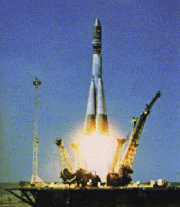
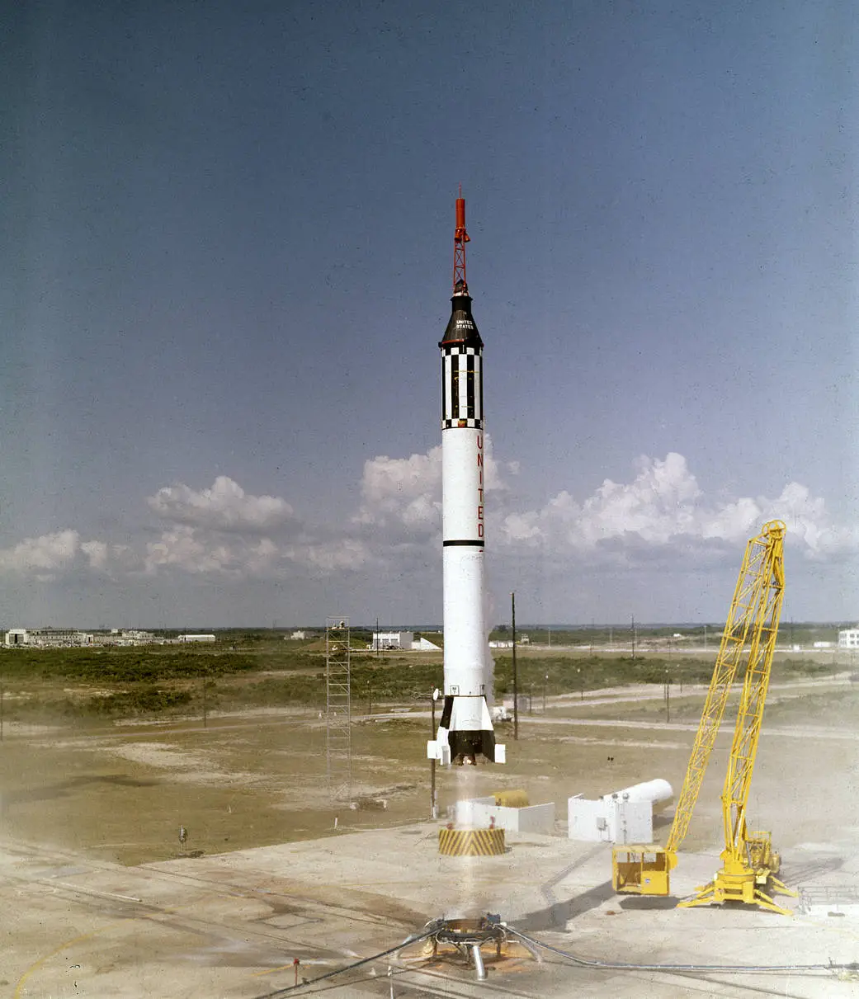

☰
˟
1960s
|
Home
Home
1960
1970
1980
1990
2000
2010
2020
1960
1970
1980
1990
2000
2010
2020
Your browser does not support the video tag.
◀
Vostok 1
April 12th, 1961

Freedom 7
May 5th, 1961

Vostok 6
June 16th, 1963
Gemini 4
June 3rd, 1965
Gemini 6A
December 15th, 1965
Apollo 1
January 27th, 1967
Apollo 8
December 21st, 1968
Apollo 11
July 16th, 1969